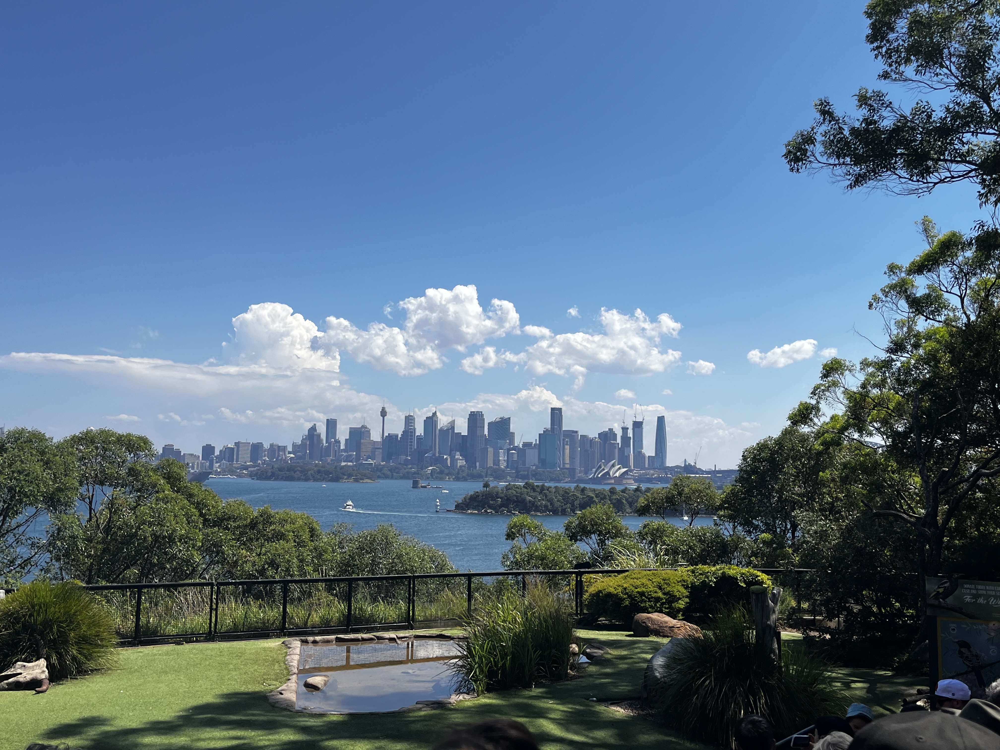

Virtual Coffee Kitchen
The present project is a joint effort of partner universities, UTS from Sydney - Australia and HTW from Berlin - Germany, along with the client, ThoughtWorks.
The COVID-19 pandemic has led to a significant rise in remote working, resulting in a decline in the social interactions of employees, which is crucial for fostering a healthy workplace culture. To address this issue, Virtual Coffee Kitchen, a product based on the concept of digital twins, has been developed specifically for modern-day remote employees. The device features a button that, when pressed, automatically creates a Zoom room and flashes a notification on the screens of all employees who have the device on their desk. This enables employees to engage in social interactions and casual conversations, similar to those they would have in the office kitchen. By eliminating the need to schedule meetings and manage notifications from various apps, this innovative and groundbreaking product is designed to enhance employee engagement and well-being in remote work settings.
Our Problem
One of the biggest challenges of remote work is staying in contact with colleagues. When people are physically present in an office, it is easy to have informal conversations with coworkers. However, with remote work, there is often a lack of spontaneous interaction and casual conversations.
Contact your colleagues with one click and start chatting!
The aim of the Virtual Coffee Kitchen is to facilitate social interactions and maintain a sense of community among remote workers who are working from home.
The device provides a simple and hassle-free way for remote workers to engage in casual conversations or scheduled meetings, thereby eliminating the need for relying on digital communication tools, such as chat messages.
With this solution, ThoughtWorkers can now join a Zoom meeting by pressing a button on a portable device placed next to their workstation, allowing them to connect with colleagues easily.
The device is battery-operated and can be used at home or in the office with reconfigured Wi-Fi settings.
Upon joining a meeting, a non-disturbing screen flash notification is sent to other ThoughtWorkers, ensuring that they are aware of the meeting without causing any interruptions.
About the Team
Our team is comprised of five individuals - two students from the University of Technology Sydney and three students from HTW Berlin.
We have dedicated our efforts to this project since July 2022 and successfully completed it in February 2023.
The team has demonstrated unwavering commitment by working collaboratively in person during summer schools held both in Sydney and Berlin, as well as remotely via online channels.
To streamline our project's management and ensure efficiency, we opted to employ the agile framework across all our sprints.
Our team was divided into three key roles - Scrum Master, Product Owner, and Developer - each responsible for specific tasks that contributed to our collective progress.
HTW
Abdelrahman Elsharkawi
Competitional Engineering / Developer
Katrin Malfent
Computer Science / Developer
Lara Pourabdolrahim Seresht
Computer Science / Developer
UTS
Anjali Kalambe
Software development / Scrum Master
Sima Sazmi
Medical Engineering / Product Owner
What we used
Our Andruino was built in C++, and we used an Apache Server written in Python.


Our Results
Here is what we figured out
Undertaking the Virtual Coffee Kitchen project proved to be both challenging and rewarding for the development team.
The project's success has been a source of great pride, reinforcing the team's unwavering belief in the power of technology to foster human connections and effect real change.
Throughout the development process, the team worked closely with the client, Thoughtworks, to ensure that the product was tailored to meet the specific needs of remote workers.
The team takes pride in having created an innovative product that not only promises to bring colleagues closer but also addresses the isolation that remote workers face.
For the team, the Virtual Coffee Kitchen project provided an excellent opportunity to showcase their skills and contribute to a product that has the potential to revolutionize the remote work landscape.
The project employed a range of cutting-edge technologies, with the Heltec ESP32 Wifi Kit acting as the backbone of the system, providing the essential computational power and connectivity required to run the digital twin.